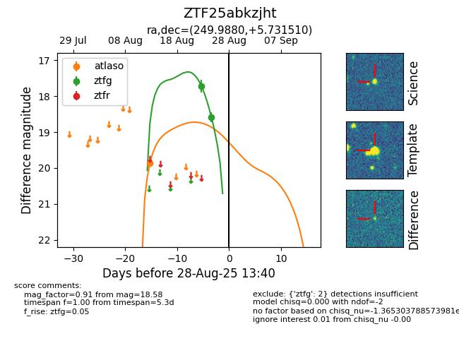

Target ZTF25abkzjht at 2025-08-26 12:25, see:
FINK: fink-portal.org/ZTF25abkzjht
Lasair: lasair-ztf.lsst.ac.uk/objects/ZTF25abkzjht
ALeRCE: alerce.online/object/ZTF25abkzjht
alt names
ZTF25abkzjht (ztf,fink)
coordinates:
equatorial (ra, dec) = (249.9880,+5.73151)
galactic (l, b) = (22.2674,+31.74700)
photometry
last atlaso=19.87, ztfg=18.58
1 atlaso, 2 ztfg detections
